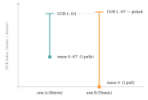

Bandits & Online Recommendation
1. The online setting: bandit feedback and the explore–exploit trade-off
The CTR chapter trained on a frozen log: a fixed table of impressions, each already labelled clicked / not-clicked. A live system is different in one decisive way — it runs in a loop, and at every step it must act:
\[ \text{round } t:\quad \text{choose an item } a_t \;\to\; \text{show it} \;\to\; \text{observe reward } r_t\ (\text{click}=1) \;\to\; \text{update}. \]
The catch is in the third arrow: you observe the reward only for the item you chose — never the counterfactual “what if I’d shown a different one?”. This is bandit feedback (the name comes from a slot machine, a “one-armed bandit”; a row of machines with unknown payouts is a multi-armed bandit, and pulling a lever = showing an item). It creates a tension absent from supervised learning:
- Exploit — show the item with the highest estimated reward so far. Safe, but if your estimates are wrong you never find out.
- Explore — show an item you are unsure about, to improve your estimate. Costly now (it may flop), but it is the only way to discover a better item.
This is not a corner case — it is the heart of three everyday recommendation problems: cold-start (a brand-new item has no data; only exploration gets it any), the feedback loop (a model that only ever exploits its current beliefs keeps showing the same items, so the data it collects confirms those beliefs — the rich-get-richer trap flagged in Evaluation Metrics §12), and simply non-stationarity (tastes drift, so yesterday’s best item must be re-checked). A good bandit algorithm is just a principled rule for how much to explore, and which uncertain arm to try.
2. The multi-armed bandit and regret
Strip the problem to its core. There are \(K\) arms (items). Each arm \(i\) pays a reward drawn from an unknown distribution with unknown mean \(\mu_i\) (think: arm \(i\)’s true CTR). At each round you pull one arm and see its reward. Your goal over \(T\) rounds is to maximize total reward — equivalently, to minimize regret.
Regret is the price of not knowing the best arm in advance: the reward you would have collected by always pulling the best arm, minus what you actually collected.
\[ \text{Regret}(T) \;=\; \underbrace{T\,\mu^{*}}_{\text{always pull the best}} \;-\; \sum_{t=1}^{T}\mu_{a_t} \;=\; \sum_{t=1}^{T}\big(\mu^{*}-\mu_{a_t}\big), \]
where \(\mu^{*}=\max_i \mu_i\) is the best arm’s mean and \(a_t\) is the arm you pulled at round \(t\). Every round you pull a sub-optimal arm, you add its gap \(\mu^{*}-\mu_i\) to the regret. The whole game is to keep regret small — and the deep result of the field is that the unavoidable regret of any good algorithm grows only logarithmically in \(T\) (you must keep exploring, but ever less often).
Why “logarithmic” — the shape of the bound. A good algorithm pulls a sub-optimal arm \(i\) only about \(\ln T/\Delta_i^{2}\) times (with gap \(\Delta_i=\mu^{*}-\mu_i\)), so total regret grows like \(\sum_i \ln T/\Delta_i\). Read it two ways: the \(\ln T\) is why exploration thins out as evidence accrues, and the \(1/\Delta_i\) says a smaller gap is harder to detect, so a close-but-worse arm costs more pulls to rule out. (Intuition, not a proof — the bound is the classic UCB1 result of Lattimore & Szepesvári.)
Worked example — regret by hand. Two arms: the best, “Matrix,” has \(\mu^{*}=0.6\); a worse one, “Comedy,” has \(\mu=0.3\), so its gap is \(0.6-0.3=0.3\). Suppose over a run your algorithm pulled Comedy 3 times (and Matrix the rest). The regret contributed by those three pulls is \[ 3 \times (0.6 - 0.3) = \mathbf{0.9}. \] That is \(0.9\) clicks given up, in expectation, for the three explorations of the worse arm. A good algorithm makes those three pulls buy enough certainty that it then exploits Matrix for the remaining rounds — paying a small, bounded exploration cost to avoid a large one.
3. ε-greedy: the simplest balance
The crudest workable rule keeps a running empirical mean \(\hat\mu_i\) for each arm (its clicks divided by its pulls) and flips a biased coin every round:
- with probability \(1-\varepsilon\), exploit: pull \(\arg\max_i \hat\mu_i\);
- with probability \(\varepsilon\), explore: pull a uniformly random arm.
The single knob \(\varepsilon\in[0,1]\) (“epsilon,” the standard symbol for a small quantity) sets the explore rate. The name is exact: greedy means “take the best-looking option,” and the \(\varepsilon\) is the small slice of the time you don’t.
Worked example — selection probabilities. With \(K=2\) arms and \(\varepsilon=0.1\), the best arm is pulled when you exploit (prob \(1-\varepsilon=0.9\)) or when you explore and the coin happens to land on it (prob \(\varepsilon\cdot\tfrac1K=0.1\cdot0.5=0.05\)): \[ P(\text{best}) = 1-\varepsilon+\tfrac{\varepsilon}{K} = 0.9+0.05 = \mathbf{0.95},\qquad P(\text{other}) = \tfrac{\varepsilon}{K} = \mathbf{0.05}. \] Simple and surprisingly hard to beat — but with two flaws you can read straight off the rule: it explores forever at rate \(\varepsilon\) even once an arm is obviously best (wasteful), and when it explores it picks uniformly, wasting pulls on arms already known to be bad instead of on the genuinely uncertain ones. The next two methods fix exactly those.
The cost of exploring, as a number. That “forever” is not free: with \(K\) arms, ε-greedy spends \(\varepsilon\cdot\frac{K-1}{K}\) of all traffic on known-inferior arms permanently — at \(\varepsilon=0.1,\ K=10\) that is \(0.1\times\frac{9}{10}=9\%\) of impressions, forever. UCB and Thompson sampling (next) explore adaptively, so their exploration decays toward zero as certainty grows — which is exactly the logarithmic-regret behaviour of §2, and why production systems prefer them to a fixed \(\varepsilon\).
4. UCB: optimism under uncertainty
Upper Confidence Bound (UCB) replaces the coin flip with a principle: be optimistic about arms you are unsure of. Score each arm by its empirical mean plus a bonus that is large when the arm has been tried few times, and pull the highest score. The classic UCB1 rule is
\[ \text{UCB}_i \;=\; \underbrace{\hat\mu_i}_{\text{exploit: how good it looks}} \;+\; \underbrace{\sqrt{\frac{2\ln t}{n_i}}}_{\text{explore: how unsure we are}}, \]
where \(t\) is the total number of pulls so far and \(n_i\) the number of pulls of arm \(i\). Decode the bonus: it shrinks as \(n_i\) grows (more data \(\to\) less uncertainty \(\to\) smaller bonus) and grows slowly with \(t\) (an arm ignored for a long time looks ever more “worth re-checking”). Pulling the highest upper bound means: either the arm really is good (high \(\hat\mu_i\)) or we don’t yet know it isn’t (high bonus) — either way it deserves a pull. No random coin: exploration is targeted at the uncertain arms.
Worked example — UCB explores the worse-looking arm. After \(t=4\) total pulls, arm A (Matrix) has been pulled \(n_A=3\) times with \(2\) clicks, so \(\hat\mu_A = 2/3 \approx 0.667\); arm B (Titanic) has been pulled \(n_B=1\) time with \(0\) clicks, so \(\hat\mu_B=0\). The bonuses use \(\ln 4 = 1.386\): \[ \text{UCB}_A = 0.667 + \sqrt{\tfrac{2(1.386)}{3}} = 0.667 + 0.961 = \mathbf{1.628},\qquad \text{UCB}_B = 0 + \sqrt{\tfrac{2(1.386)}{1}} = 0 + 1.665 = \mathbf{1.665}. \] UCB pulls B (\(1.665 > 1.628\)) — the arm whose mean (0) is far worse, because it has barely been tried and its bonus dwarfs the gap. That is optimism doing its job: don’t write off an arm you’ve only seen once. (The UCB index can exceed \(1\); it is a score to compare, not a probability.)

5. Thompson sampling: the Bayesian balance
Thompson sampling explores by a different, beautifully simple idea: keep a probability distribution over each arm’s true CTR, and at each round sample one value from each arm’s distribution and pull whichever sample is largest. Arms you are unsure about have wide distributions, so they sometimes draw a high sample and get explored; arms you’ve pinned down have narrow distributions and get pulled only when they really are best. Exploration falls out of the uncertainty itself, with no extra knob.
For click/no-click rewards the natural distribution is the Beta distribution, \(\text{Beta} (\alpha,\beta)\) — a distribution over a probability in \([0,1]\). Start each arm at the uniform prior \(\text{Beta}(1,1)\); after seeing \(s\) clicks and \(f\) non-clicks, the posterior is simply \[ \text{Beta}(1+s,\ 1+f),\qquad \text{with mean } \frac{1+s}{(1+s)+(1+f)} . \] (That clean “just add the counts” update is why Beta is used: it is the conjugate prior of the Bernoulli click — the posterior stays a Beta, so updating is bookkeeping, not integration.)
Worked example — Beta posteriors. Arm A has \(2\) clicks and \(1\) non-click \(\to \text{Beta}(1+2,\,1+1)=\text{Beta}(3,2)\), posterior mean \(\tfrac{3}{3+2}=\mathbf{0.60}\). Arm B has \(0\) clicks and \(1\) non-click \(\to \text{Beta}(1,2)\), posterior mean \(\tfrac{1}{1+2}=\mathbf{0.333}\). A’s distribution sits higher and is a touch narrower (it has seen more data), so most rounds A’s sample beats B’s and A is exploited — but B’s posterior is wide enough that it still occasionally samples above A and gets explored. As more data arrives, both posteriors narrow toward their true CTRs and the exploration self-extinguishes. In practice Thompson sampling matches or beats UCB while being trivial to implement.
6. Contextual bandits: when the best arm depends on who is asking
Plain bandits assume each arm has one CTR for everybody. Real recommendation does not: the Matrix is a great pull for a sci-fi fan on a Friday night and a poor one for someone else. A contextual bandit adds a context \(\mathbf x_t\) (a feature vector for the user \(+\) item \(+\) situation — exactly the CTR features of Click-Through Rate Prediction & Feature Interactions §2) and lets the expected reward depend on it. The standard linear form, LinUCB, assumes the reward is roughly linear in the context,
\[ \mathbb E[r \mid \mathbf x] \approx \boldsymbol\theta^{\top}\mathbf x, \]
estimates \(\boldsymbol\theta\) by ridge regression (least-squares with an L2 penalty — Loss Functions & Regularizers) on the data seen so far, and adds a UCB-style confidence bonus that is large for contexts unlike anything it has tried — the §4 idea, now in feature space. The payoff of the reframing is large: a contextual bandit is, almost exactly, online CTR prediction with built-in exploration — the DeepFM/DCN ranker of the CTR chapter, but choosing what to show and learning from the click it gets back, instead of training once on a frozen log. (Replace the linear \(\boldsymbol\theta^{\top}\mathbf x\) with a neural CTR model and you have a deep contextual bandit.)
7. Bandits in recommendation
Where this actually shows up:
- Personalized news (the canonical case). Li et al. (2010) framed Yahoo!’s front-page article selection as a contextual bandit and deployed LinUCB, with a measurable click lift over non-exploring baselines — the paper that put contextual bandits on the recommendation map.
- Cold-start. A new item has no interaction history, so every model that only exploits ignores it forever; a bandit’s exploration term is precisely what gives a fresh item its first impressions and a fair chance to prove itself.
- Offline evaluation by replay. You cannot A/B-test every idea online. Li et al. (2011) gave an unbiased replay estimator: scan a log of randomly-served impressions and keep only the rounds where the logged action matches the policy’s choice — a way to score a bandit policy on past data without bias (the bandit cousin of the full-ranking caution in Evaluation Metrics). More generally, replay is one of a family of off-policy estimators: inverse propensity scoring (IPS) reweights each logged reward by \(1/p\) — the inverse probability the logging policy took that action — and doubly-robust estimators add a learned reward model to cut IPS’s variance. This is the same IPS machinery Evaluation Metrics §12.4 uses to debias MNAR feedback; plain replay is the special case that needs randomized logs and discards every non-matching round (low bias, high variance).
- The step to full RL. A bandit assumes each action is one-shot: what you show now does not change what situation you face next. When it does — recommending episode 1 changes whether episode 2 is even relevant; a feed shapes the user’s session and their long-term return — the problem becomes reinforcement learning, where actions move a state and you optimize long-term reward. That is exactly the subject of the Reinforcement Learning for Recommendation appendix; a bandit is RL with a single state.
Bandit, A/B test, or full RL? A quick rule. Comparing a few fixed options and want to stop losing traffic to the loser fast → a bandit. Comparing two whole system versions for a ship/no-ship decision → an A/B test (the clean, unbiased comparison of Evaluation Metrics §11c). The action changes the next state (sessions, sequences, long-term return) → full RL.
Two deployment realities. Real systems rarely update after every pull: feedback arrives in batches and is often delayed or censored (a non-click now may be a click in an hour), so production bandits update in mini-batches and must tolerate stale rewards. And because tastes drift (the non-stationarity of §1), a stationary bandit slowly goes blind to change — the fix is a discounted or sliding-window variant (e.g. discounted UCB) that re-inflates uncertainty over time so the policy keeps re-checking arms it had written off.
8. Where this fits in the book
This chapter completes the Frontiers turn that Click-Through Rate Prediction & Feature Interactions began. CTR prediction learns from a fixed log; bandits close the loop — the recommender now chooses what to show and learns from the feedback, paying for the privilege in regret and managing it through exploration. It draws its reward signal (the click) and its feature vector (the context) straight from the CTR chapter, and it inherits the feedback-loop worry of Evaluation Metrics §12 — exploration is, in part, the cure for a recommender that only ever confirms its own beliefs. It also points forward: relax the bandit’s “one-shot action” assumption and you get full reinforcement learning, taken up next in its appendix. Bandits are the bridge between the supervised models of the core ladder and the sequential decision-making at the field’s edge.
9. Exercises
Ten problems on the chapter’s two-arm running example and tiny numbers. Solutions in the back-matter Solutions appendix.
E1. (compute) An algorithm pulls a sub-optimal arm with gap \(\mu^{*}-\mu = 0.25\) a total of \(8\) times over a run. What total regret do those pulls contribute? (Answer in Appendix B.)
E2. (compute) With \(K=4\) arms and \(\varepsilon=0.2\), give the probability the best arm is pulled on a round, and the probability any one specific other arm is pulled. (Answer in Appendix B.)
E3. (compute) Recompute the §4 UCB scores at total pulls \(t=9\) (so \(\ln t = 2.197\)), keeping \(\hat\mu_A=0.667,\ n_A=3\) and \(\hat\mu_B=0,\ n_B=1\). Which arm does UCB pull now? (Answer in Appendix B.)
E4. (compute) Arm A has been pulled \(n_A=50\) times with \(\hat\mu_A=0.60\); arm B \(n_B=2\) times with \(\hat\mu_B=0.50\), at \(t=52\) (\(\ln 52 = 3.951\)). Compute both UCB scores and say which is pulled. (Answer in Appendix B.)
E5. (compute) Under Thompson sampling with a \(\text{Beta}(1,1)\) prior, an arm has seen \(4\) clicks and \(6\) non-clicks. Give its posterior \(\text{Beta}(\alpha,\beta)\) and its posterior mean. (Answer in Appendix B.)
E6. (concept) Name the two specific weaknesses of ε-greedy that UCB removes, citing the two terms of the UCB formula. (Answer in Appendix B.)
E7. (concept) In UCB, why does the bonus contain \(n_i\) in the denominator and \(\ln t\) in the numerator? Describe what each does as the run proceeds. (Answer in Appendix B.)
E8. (concept) Thompson sampling has no \(\varepsilon\) knob, yet it still explores. Where does the exploration come from, and why does it automatically fade as data accumulates? (Answer in Appendix B.)
E9. (extend) You add a brand-new item (no impressions). Explain what each of ε-greedy, UCB, and Thompson sampling does with it on the very next round, and which gives it the strongest initial push. (Answer in Appendix B.)
E10. (apply) A contextual bandit serves Ann (sci-fi fan, mobile, evening). Describe, in terms of §6, how it would choose an article to show her and how it updates after seeing whether she clicks — and state the one thing that makes it a contextual bandit rather than the supervised CTR model of the previous chapter. (Answer in Appendix B.)
10. Glossary
| Term | Plain meaning |
|---|---|
| Bandit feedback | You observe the reward only for the action you took, never the alternatives. |
| Arm | One choosable option (an item); “pulling” it = showing it. From the slot-machine metaphor. |
| Explore vs. exploit | Try an uncertain option to learn (explore) vs. take the best-known one now (exploit). |
| Regret | \(\sum_t(\mu^{*}-\mu_{a_t})\): reward lost versus always pulling the best arm. |
| ε-greedy | Exploit the best estimate with prob \(1-\varepsilon\); pull a uniform-random arm with prob \(\varepsilon\). |
| UCB | Pull \(\arg\max_i\,[\hat\mu_i + \sqrt{2\ln t / n_i}\,]\): highest upper bound — optimism under uncertainty. |
| Thompson sampling | Keep a posterior per arm; sample one value from each and pull the largest sample. |
| Beta posterior | \(\text{Beta}(1+s,1+f)\) for \(s\) clicks, \(f\) non-clicks; conjugate to the Bernoulli click. |
| Contextual bandit | The reward depends on a context (user/item features); LinUCB models it linearly. |
| LinUCB | Ridge-regression reward estimate \(\boldsymbol\theta^{\top}\mathbf x\) plus a feature-space confidence bonus. |
| Offline replay | Unbiased evaluation of a bandit policy on a log of randomly-served actions (Li et al. 2011). |
11. References
Auer, P., Cesa-Bianchi, N., & Fischer, P. (2002). Finite-time analysis of the multiarmed bandit problem. Machine Learning, 47(2–3), 235–256. https://doi.org/10.1023/A:1013689704352 (UCB1).
Chapelle, O., & Li, L. (2011). An empirical evaluation of Thompson sampling. In Advances in Neural Information Processing Systems (NeurIPS) 24, 2249–2257.
Li, L., Chu, W., Langford, J., & Schapire, R. E. (2010). A contextual-bandit approach to personalized news article recommendation. In Proceedings of WWW. arXiv:1003.0146 · https://doi.org/10.1145/1772690.1772758 (LinUCB; ToT Award 2023).
Li, L., Chu, W., Langford, J., & Wang, X. (2011). Unbiased offline evaluation of contextual-bandit-based news article recommendation algorithms. In Proceedings of WSDM. arXiv:1003.5956 · https://doi.org/10.1145/1935826.1935878 (offline replay).
Lattimore, T., & Szepesvári, C. (2020). Bandit algorithms. Cambridge University Press. https://doi.org/10.1017/9781108571401 (the rigorous reference text).
Sutton, R. S., & Barto, A. G. (2018). Reinforcement learning: An introduction (2nd ed.). MIT Press. (for the step from bandits to full RL — see the RL appendix).
Online sources verified June 2026.